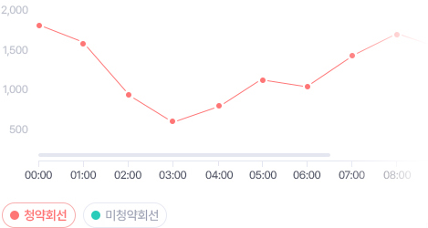
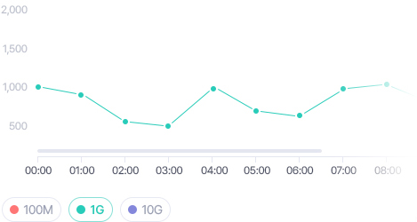
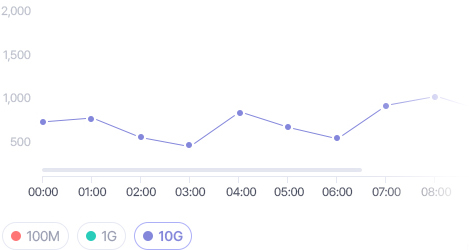

닫힘
KT
실시간 모니터링
서비스 현황
서비스 추이
관리자 기능
인터넷 속도측정 관리 시스템
실시간 모니터링
측정타입별
측정서버별
서비스 현황
서비스 현황 조회
서비스 추이
일 조회
월 조회
년 조회
관리자 기능
고객측정이력조회
사용자정보관리
홍
홍길동
총괄관리자
로그아웃
실시간 모니터링
측정서버별
측정서버별 조회 검색폼
기간
최근
최근 5분
최근 30분
최근 1시간
최근 1일
최근 7일
OFF
30초
1분
5분
10분
측정서버
혜화서버#1
혜화서버#2
혜화서버#3
혜화서버#4
혜화서버#5
조회
전체해제
혜화서버#1
삭제
혜화서버#2
삭제
혜화서버#3
삭제
혜화서버#4
삭제
혜화서버#5
삭제
전체
측정서버
OLT위치
청약여부
일반 측정 건수
엑셀

SLA 유효 측정 건수
엑셀

SLA 유효 미달 건수
엑셀

SLA 측정 건수
엑셀
SLA 미달 건수
엑셀
이의 신청 건수
엑셀